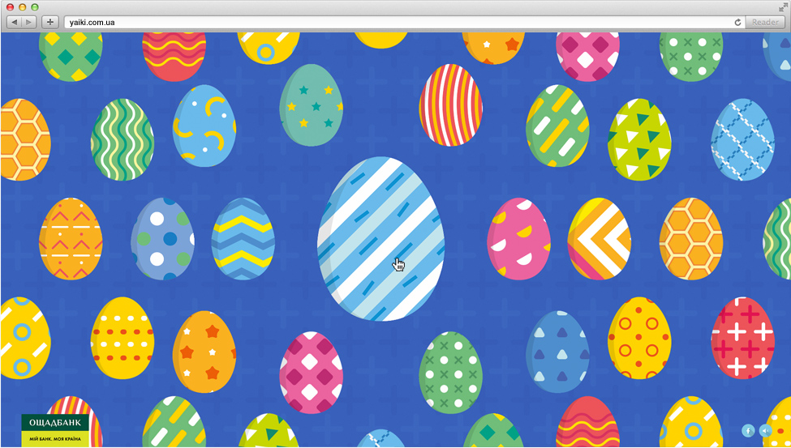
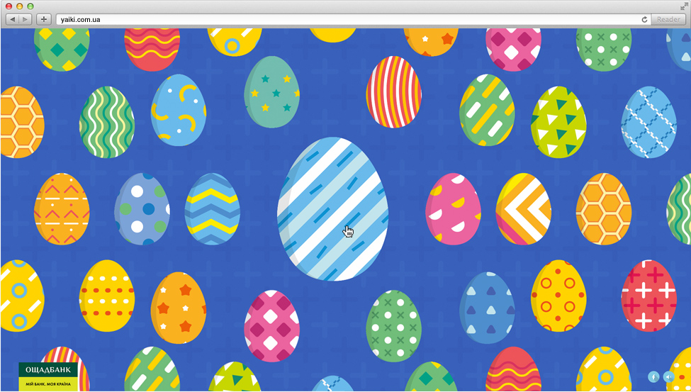
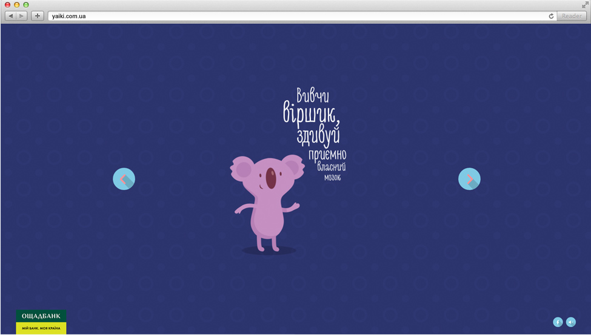
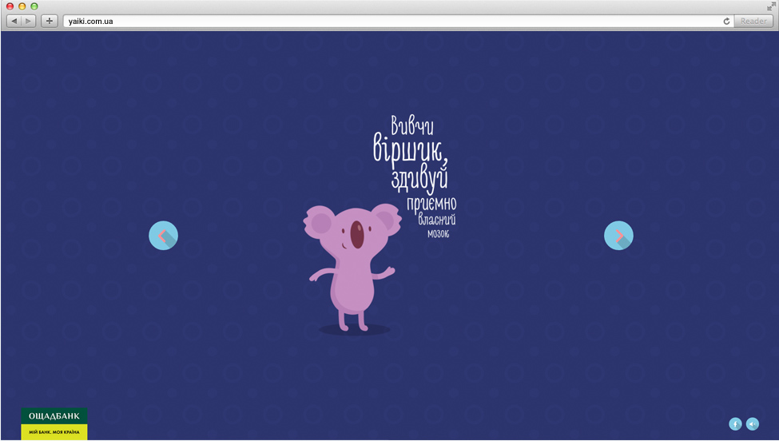

Pisanka
Klient: Oszczadbank
http://www.yaiki.com.ua/en 
 

Zadanie
Stworzyć stronę internetową dla promocji programy depozyty ”Pysanka“ od ”Oszczad banku“.
Realizacja
Design opierany na wiadomej mechanice Fortune cookies stworzyła agencja FEDORIV. Użytkownik mógł wybrać swoją pisankę rozbić jej i dostać nauczanie.
Najtrudniejszym było realizować wizualnie prosty, ale przy tym funkcjonalnie bogaty interfejs. Ponieważ celą tej strony byli użytkownicy banka istnieli surowe wymagania k podtrzymywanym platformom, użyciu procesora pamięci etc. W związku z tym ja stworzyłem dwie realizacji: jedna wykorzystuje canvas a inna DOM elementy. Canvas realizacja maluje animowane obrazki wszystkich jajek po kolejce na jednym małym płótnie a potem kopiuje ich w dataUrl. Jak pokazali eksperymenty — to jest najszybszy sposób dla klientów z graniczeniami wykorzystania pamięci. Żeby porównać próbowałem warianty z jednym dużym płótnem i wielką ilością małych.
Żeby osiągnąć najprecyzyjniejszej zgodności czcionkowej części designa, tylko teksy jaki wpisuje użytkownik pokazują się za dopomogą czcionki inne są png animacją. W czasie świąt Wielkanocnych gra bardzo popularna wśród młodych ludzi w sieciach społecznych.
Projekt został wykonany korzystając z technologii HTML5 (Backbone/Marionette)